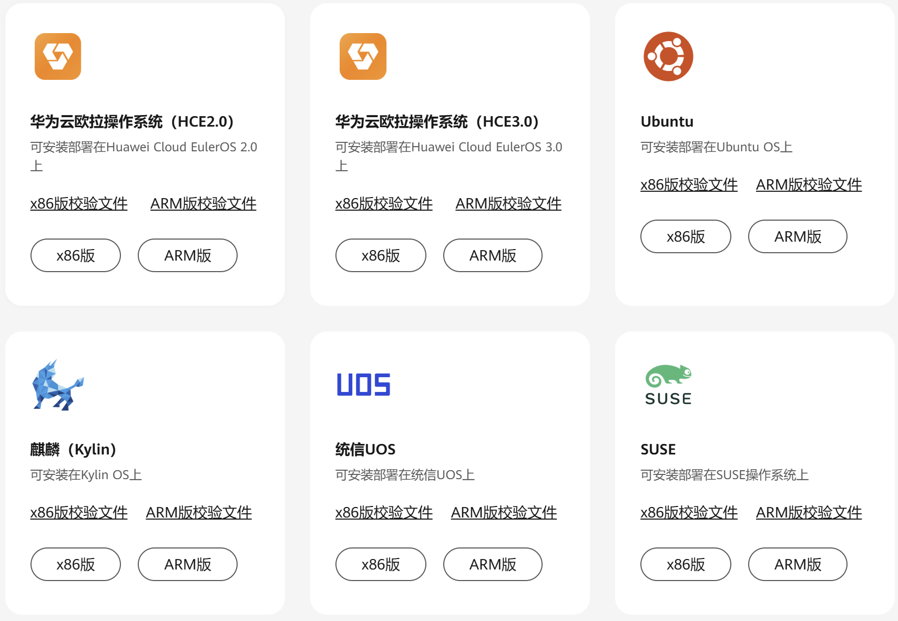

【GaussDB】把华为云公开下载的GaussDB开发者版本做成88MB的docker镜像
背景
2026年9月中旬，华为云总算是把GaussDB的安装介质提供了公开下载，不过需要注意的是，这次提供的安装包并非企业版，而是开发者版本：
版本号为：GaussDB_V2.0-10.0.0_trial
内核版本为：Kernel 507.0.T1 build 7b258e66
官方下载页面：https://www.huaweicloud.com/intl/zh-cn/product/gaussdb/download.html

这算是大放送了，不同操作系统加CPU架构，一共提供了12个安装包。
我大概比较了下guc参数和一些内置视图的情况，个人判断这个版本应该和企业版的507.0.1比较接近，但是gaussdb这个二进制文件的大小还是略有偏差，暂不好判断内核功能是否真的完全一致。不过对于开发者来说，有了这个版本，总算能去正经地去给GaussDB做应用软件适配了，不需要自己花钱买云上的GaussDB服务，也不需要先自己装个openGauss搞一遍，然后再到客户环境重新适配一次GaussDB（虽然不过但是大概率由于版本差异，还是得测一遍）。
我之前有做过GaussDB的容器版本，但是只提供了构建脚本，而且由于GaussDB的安装包当时华为并没有公开，所以我也没有把docker镜像放出来。
现在有公开下载的安装包了，所以完全可以写个一键构建脚本。
这种活我就不自己来了，直接给deepseek-flash一台kylinv10服务器，让它自己去干了。
注：本文提供的方式不是官方的安装方式，只是平掉个人之前的一个意难平。如果想正经安装一次，建议还是遵循官方文档的操作 https://doc.hcs.huawei.com/db/zh-cn/gaussdbdev/26.861.0/install-dev/gaussdb-04-0001.html
ME:
https://www.darkathena.top/archives/docker-build-kylinv10sp3-image-includ-gaussdb-runtime
https://www.darkathena.top/archives/build-a-docker-image-for-gaussdb
参考这几篇文章，用GaussDB开发者版本，基于kylinv10sp3做一个最小化的GaussDB开发者版本的docker镜像，不需要om那些组件
你可以使用192.168.1.80 这台机器进行开发构建，最后给我完整的构建脚本，数据库安装包在 https://dbs-download.obs.cn-north-1.myhuaweicloud.com/GaussDB/1789441455696/GaussDB_V2.0-10.0.0_trial_Euler_X86_20260915102549.zip https://dbs-download.obs.cn-north-1.myhuaweicloud.com/GaussDB/1789441436677/GaussDB_V2.0-10.0.0_trial_Euler_ARM_20260915102549.zip ,另外，确认一下用gs_om安装时，默认参数是怎么配置的，和我之前entrypoint.sh脚本里507版本的有什么差异
README
GaussDB 开发者版最小化 Docker 镜像（Kylin V10 SP3，x86_64 / aarch64 自适应）
基于你之前两篇文章的思路重做，产物是单机集中式内核，不含 om / cm / etcd / gns / gs_roach。构建脚本会按构建机架构自动选择安装包与镜像 tag。
| 项 | 值 |
|---|---|
| 数据库版本 | GaussDB V2.0-10.0.0 trial，Kernel 507.0.T1 build 7b258e66（2026-09-14 编译） |
| 内核包 | GaussDB-Kernel_507.0.T1_Euler_64bit.bin（发布包里的 Server 组件，x86/ARM 同名，内容架构不同） |
| 基础系统 | Kylin V10 SP3，glibc 2.28，dnf --installroot 自建（架构跟随构建机） |
| 镜像 | gaussdb-dev:10.0.0-507.0T1-x86_64，未压缩 399MB，xz 压缩 88MB |
| 系统层 | 105MB（你之前文章里自建的是 191MB，DockerHub 那个是 609MB） |
| 数据目录 | /opt/gaussdb/data，属主 1000:1000 |
| 构建机 | 192.168.1.80（kylinv10sp3-node1，x86_64，docker 27.0.3）；ARM 版需在同架构 Kylin 机器上构建 |
架构自适应（x86_64 / aarch64）
脚本通过 uname -m 自动判断，无需改任何配置：
| x86_64 | aarch64 | |
|---|---|---|
| 安装包目录 | Euler2.10_X86_64 | Euler2.10_arm_64 |
| Server 组件 | ..._Server_X86_Developer.tar.gz | ..._Server_ARM_Developer.tar.gz |
内核 .bin | 96MB / x86-64 | 86MB / ARM aarch64 |
| 镜像 tag | ...-x86_64 | ...-aarch64 |
numa_distribute_mode | 不设 | all（entrypoint 内按 uname -m 追加） |
| 工作目录 | $WORK/x86_64 | $WORK/aarch64 |
几个保障点：
- 内层 tar 与
.bin文件名两架构完全同名（GaussDB_V2.0-10.0.0_trial_Euler_64bit_Server.tar.gz），所以脚本全程用find动态定位，不硬编码路径。 - 解压后校验
file bin/gaussdb的架构，拿错包会直接报内核包架构与目标架构不符。 dnf --installroot不能跨架构构建，脚本检测到ARCH与uname -m不符会立即退出并提示。- 构建末尾自动冒烟自检（镜像内执行
gaussdb --version），架构错配或缺系统库会当场暴露。 - 可选包
libstdc++ / libatomic / libgcc按当前架构仓库可用性动态决定装不装（ARM 包的dependency/lib比 x86 少一个 libstdc++，补上更稳）。
ARM 机器上的用法完全一样：
./build_gaussdb_dev_image.sh # 自动识别 aarch64
# 或强制指定（调试用）
ARCH=aarch64 ./build_gaussdb_dev_image.sh
交付物
| 文件 | 说明 |
|---|---|
build_gaussdb_dev_image.sh | 一键构建脚本（entrypoint 内嵌，单文件即可交付，x86/ARM 通用） |
机器上 gaussdb-dev-10.0.0-507.0T1-*.tar.xz | 已导出的镜像包，88MB |
关键发现（比文章方案多踩的坑）
- Euler 内核能在 Kylin 上跑。trial 包只有
Euler_X86，一开始担心 glibc 版本不匹配。实测strings bin/gaussdb | grep GLIBC_最高只到 GLIBC_2.28，正好等于 Kylin V10 SP3 的 glibc，直接在宿主机gaussdb --version就跑通了。所以不需要为它准备 Euler 基础镜像。 - Kernel 507 的认证文件改名了：
pg_hba.conf→gs_hba.conf。文章里gs_guc set -Z hba ...的写法在 507 上直接报unrecognized node type "hba"，正确写法是去掉-Z：
gs_guc set -D $PGDATA -h "host all all 0.0.0.0/0 md5" - 不需要
util-linux。文章里为了su/useradd装了 util-linux，多出约 50MB。本方案用 Docker 原生USER 1000:1000降权 + 手写/etc/passwd，整个 util-linux/pam/shadow-utils 都不用装。 locale-archive可以直接删，不用localedef裁剪。rootfs 里已有独立的en_US.utf8/zh_CN.utf8/C.utf8目录形式，glibc 会回退使用，locale -a正常。省掉 206MB，也省掉构建阶段那次build-locale-archive。dnf remove不要用。Kylin 源里coreutils依赖gmp，删mpfr会连带删掉gmp→coreutils→head/ls全没。而dnf install又会被弱依赖强行带回 python3/tcl/sqlite（rpm -q --whatrequires显示没有任何包依赖它们）。所以脚本改成「一次装齐 + 手工删文件」，删完直接rm -rf /var/lib/rpm。- 单层
docker import比docker build更省。多阶段/多层构建里被rm掉的文件仍留在底层，docker save时照样占体积。单层导入后，399MB 压到 88MB（≈内核包本身的 92MB），这就是压缩包比文章 146MB 小 40% 的原因。 date '2026-11-02'会报错（invalid value "26-11-02" for "MON"）。这是 507 内核对方言下日期字面量的解析行为，datestyle确实是ISO, MDY，与镜像无关；用to_date('2026-11-02','YYYY-MM-DD')或'2026-11-02'::date正常。sh: more: command not found（长输出翻页报错）。第 3 条不装util-linux的副作用：gsql 在交互式终端下输出超过一屏时会调$PAGER，而PAGER未设置时的内置默认值是more，more属于 util-linux，被裁掉了，于是出现：
注意这是被 gsql 自己起的gaussdb=# show behavior_compat_options; sh: more: command not found <-- gsql 用 sh -c 起的 pagersh打出来的，不是你在 shell 里敲的命令有问题；非交互（管道/重定向/-c且非 tty）时 gsql 不会调 pager，所以脚本里从不复现。
实测 507 的 gsql 二进制里只认PAGER（grep -a只捞到 1 处PAGER、9 处LESS，没有PSQL_PAGER/GSQL_PAGER，与它基于老版 psql 代码一致），且它会自行setenv("LESS","FRX")。
修法二选一：装more（+util-linux ~50MB，不划算）或装less并ENV PAGER=less（+190KB）。本镜像用后者，docker import时带ENV PAGER=less+ENV LESS=FRX；docker exec会继承镜像 ENV，docker run -e PAGER=cat可临时关掉分页。
顺带补了 terminfo：原裁剪规则只留a/d/l/s/v/x六个目录，把t/删了，tmux 用户（TERM=tmux-256color）进来会报 unknown terminal，现已保留t/（+572KB）。
系统包清单是怎么定出来的
不是猜的。把解压后 bin/* 和 lib/*.so* 全部用 LD_LIBRARY_PATH=lib 跑一遍 ldd，聚合所有落到 /usr、/lib 的系统 so，再用 rpm -qf（readlink -f 解开符号链接，避免误判成 -devel 包）反查归属，最终只有 6 个包：
glibc keyutils-libs libaio libuuid libxcrypt ncurses-libs
libssl/libcrypto/libcurl/libxml2/libkrb5/libz/libzstd 等全部由内核自带 $GAUSSHOME/lib 提供，不用装。ldd 里出现的 libcom_err/libgssapi_krb5 之类都是被自带库满足的，别被误导。
用法
# 构建（在对应架构的 Kylin 机器上，root）
cd /data/gaussdb-mini/build
./build_gaussdb_dev_image.sh # 全流程，约 40 秒（不含首次 initdb）
./build_gaussdb_dev_image.sh base # 只重建最小系统 rootfs
./build_gaussdb_dev_image.sh clean # 清理中间产物
# 下面示例用 x86_64 的 tag，ARM 机器上把后缀换成 -aarch64
IMG=gaussdb-dev:10.0.0-507.0T1-x86_64
# 启动（首启约 60 秒做 initdb，之后 6 秒内可连）
docker run -d --name gaussdb --memory=4g -p 8000:5432 $IMG
# 连接
docker exec -it gaussdb gsql -d postgres
docker exec -it gaussdb gsql -d postgres -U admin -WGaussdb@123 -h 127.0.0.1 -p 5432
# 持久化（用命名卷，属主会继承，不用手动 chown）
docker run -d --name gaussdb --memory=4g -p 8000:5432 \
-v gsdata:/opt/gaussdb/data $IMG
# 导出/导入
docker save $IMG | xz -T0 -6 > gaussdb-dev.tar.xz
docker load < gaussdb-dev.tar.xz
可用环境变量
| 变量 | 默认 | 说明 |
|---|---|---|
GS_PASSWORD | Gaussdb@123 | initdb 口令 + admin 口令 |
GS_ADMIN_USER | admin | 首启创建的系统管理员 |
GS_PORT | 5432 | 库监听端口 |
GS_MAX_PROCESS_MEMORY_MB | 自动 | 容器内存 ×0.665（对齐 gs_om 公式），限 2048~32768 |
GS_SHARED_BUFFERS_MB | 自动 | 容器内存 ÷4，上限 1024（对齐 gs_om 单机模板 1GB），下限 128 |
内存参数按容器 cgroup 上限自动算：--memory=4g → max_process_memory=2723MB / shared_buffers=1024MB，不必手改。建议至少给 4G。
初始化参数（来源：gs_om 单机模板 + TPOPS 507 分支）
参数不是拍脑袋定的，冲突项按来源取舍：标 gs_om 的取 guc_ci_centralized_list_8c_32g.xml（gs_om 装单机时的默认模板），标 507 的取 TPOPS entrypoint 里 507 分支的值。
| 参数 | 值 | 来源 |
|---|---|---|
max_process_memory | 容器内存×0.665 | gs_om（原为公式 PHYSIC_MEMORY*0.665/(N+MAX_MASTER_DATANUM_IN_ONENODE)） |
shared_buffers | 1GB（小容器按 25% 缩） | gs_om |
max_connections | 1024 | gs_om |
maintenance_work_mem | 64MB | gs_om |
max_prepared_transactions | 800 | gs_om |
effective_cache_size | 512MB | gs_om |
timezone / log_timezone | PRC / PRC | gs_om |
wal_buffers | 256MB | 507 |
work_mem | 64MB | 507 |
ssl | off | 507 |
session_timeout | 0 | 507 |
log_min_duration_statement | 100ms | 507 |
thread_pool_attr | 16,2,(nobind) | 507 |
password_encryption_type | 1（md5） | 507 |
a_format_version / a_format_dev_version | 10c / s6 | 507 |
behavior_compat_options | 33 项（实测生效 33/33） | 507 |
enable_alarm | off | 容器内无 snas 告警组件 |
password_policy | 0 | 开发者便利（内核默认 1） |
几个和原 TPOPS 脚本不同的处理：
sql_beta_feature去掉了a_style_coerce（507 内核已不识别，设置后被静默丢弃），并去掉了值里的空格。- 原脚本的版本判断
[ "$v" == "507.0.0" ]对 trial 版（507.0.T1）不成立，会导致 507 专属参数整块跳过；本镜像直接固定为 507 参数集，不存在这个问题。 - 单机无意义的
dcf_run_mode、dcf_rep_append_thread_num、most_available_sync、standby_shared_buffers_fraction未设置。
裁剪清单
从内核包里删掉的（都是集群/备份/服务发现类，单机跑SQL用不到）：
| 类别 | 文件 | 省 |
|---|---|---|
| DCF 元数据存储 | bin/etcd、bin/etcdctl、lib/libetcdapi.so.1 | 64M |
| 服务发现 GNS | bin/gns_ctl、bin/gns_server、gns_control.sh | 34M |
| 备份 Roach | bin/gs_roach | 7.6M |
| DCF 工具 | bin/dcf_tool | 2.6M |
| 应急/黑匣子/性能服务 | gs_rescue、gs_rescue_tui、gs_blackbox、gs_perf_service | ~4M |
| 前端资源/杂项 | echarts*.js、dbe_stats_tools.py、krb5 服务端 | ~3M |
| AI/Python 扩展 | libxgboost.so、libpyzenith.so、pyzenith.so | 10M |
| 告警配置 | bin/alarmItem.conf（trial 包自带解析缺陷，启动必报 Invalid data in AlarmItem file） | 0 |
保留了 libdcf.so、libremote.so（gaussdb 会 dlopen，删了有风险）、ecpg、gstrace、gs_dump/gs_restore、全部编码转换插件和 share/gaussdb（系统表定义，不能删）。
GAUSSHOME 从 405M 降到 287M，其中 bin/gaussdb 单文件就 157M，是压不下去的主体。
目录结构
镜像内
/opt/gaussdb GAUSSHOME（属主 gaussdb）
├── bin/ gaussdb、gs_initdb、gs_ctl、gs_guc、gsql、gs_dump...
├── lib/ 自带 so + lib/gaussdb/ 编码/插件
├── share/gaussdb/ 系统表定义、SQL 脚本
├── data/ PGDATA（命名卷挂这里）
├── log/{pg_log,pg_audit,asp_data,pg_perf,sql_monitor}/dn_6001
└── entrypoint.sh
注意
- 首启慢是正常的：initdb + 建 admin + 重启，约 60 秒。日志出现
[entrypoint] 启动 GaussDB后再等几秒即可连。 - bind mount 宿主机目录要 chown：镜像以
1000:1000运行，挂宿主机目录时目录属主是 root 会写不进去，entrypoint 会直接报错并提示chown -R 1000:1000。用docker volume命名卷没这个问题。 - 启动日志里可能有 1 条
framework_wlmgr_cpuctrl_gscgroup.cpp相关的 ERROR：容器内没有 cgroup 写权限，WLM 的 cgroup 初始化失败，不影响使用。如需彻底安静，可在脚本 entrypoint 的参数数组里补一条-c "use_workload_manager = off"后重建。 - trial 版有 license 限制（单机、容量/时长），生产别用。
- 想在容器里装东西（python 等）需
docker exec -u 0，镜像内没有包管理器和 yum 源。 - ARM 上若端口映射不通（你之前文章里提过 docker 18 在 arm64 上映射不出端口），先用
--net=host绕过，库直接监听宿主 5432。
一键构建脚本
build_gaussdb_dev_image.sh
#!/bin/bash
###############################################################
# GaussDB 开发者版 最小化 Docker 镜像 一键构建脚本（x86_64 / aarch64 自适应）
#
# 基础系统 : Kylin V10 SP3（架构跟随构建机）—— dnf --installroot 生成
# 数据库 : GaussDB V2.0-10.0.0 trial (Kernel 507.0.T1)
# 组件范围 : 仅单机集中式内核，不含 om / cm / etcd / gns / gs_roach
#
# 构建机要求: Kylin V10 SP3（x86_64 或 aarch64）/ root / docker / 可访问 Kylin yum 源
# 用法: ./build_gaussdb_dev_image.sh # 全流程
# ./build_gaussdb_dev_image.sh base # 只做最小系统 rootfs
# ./build_gaussdb_dev_image.sh kernel # 只下载解出内核 .bin
# ./build_gaussdb_dev_image.sh image # 只装内核并打包镜像
# ./build_gaussdb_dev_image.sh clean # 清理中间产物
# ARCH=aarch64 ./build_gaussdb_dev_image.sh # 强制指定架构（默认取 uname -m）
###############################################################
set -euo pipefail
#========================= 架构检测 =========================
# 用 ARCH 环境变量可强制指定；默认取 uname -m
ARCH_RAW="${ARCH:-$(uname -m)}"
case "$ARCH_RAW" in
x86_64|amd64) ARCH="x86_64" ;;
aarch64|arm64|armv8*) ARCH="aarch64" ;;
*) echo "[ERROR] 不支持的架构: $ARCH_RAW（仅支持 x86_64 / aarch64）" >&2; exit 1 ;;
esac
# 官方 trial 包下载地址（可用 PKG_URL 环境变量覆盖）
PKG_URL_X86="https://dbs-download.obs.cn-north-1.myhuaweicloud.com/GaussDB/1789441455696/GaussDB_V2.0-10.0.0_trial_Euler_X86_20260915102549.zip"
PKG_URL_ARM="https://dbs-download.obs.cn-north-1.myhuaweicloud.com/GaussDB/1789441436677/GaussDB_V2.0-10.0.0_trial_Euler_ARM_20260915102549.zip"
case "$ARCH" in
aarch64) DEFAULT_PKG_URL="$PKG_URL_ARM" ;;
*) DEFAULT_PKG_URL="$PKG_URL_X86" ;;
esac
PKG_URL="${PKG_URL:-$DEFAULT_PKG_URL}"
# 按架构分目录，避免同机先后构建两种架构时互相污染
WORK="${WORK:-/data/gaussdb-mini/build}/$ARCH"
IMAGE_NAME="${IMAGE_NAME:-gaussdb-dev}"
IMAGE_TAG="${IMAGE_TAG:-10.0.0-507.0T1-$ARCH}"
GAUSSHOME="/opt/gaussdb" # 镜像内数据库安装目录
GS_UID=1000 # 容器内 gaussdb 用户 uid
GS_GID=1000
RELEASEVER="${RELEASEVER:-10}" # Kylin V10 -> 10
# 必需系统包（x86_64 依据 gaussdb 全部二进制 ldd 结果反查 rpm 得出，aarch64 同构）
# 注意保留 less：gsql 输出超过一屏时会调用 $PAGER 分页，未装 pager 会报
# "sh: more: command not found"。默认 pager 是 more（属 util-linux，约 50MB，已裁掉），
# 所以这里显式装 less（约 190KB）并在打包时把 PAGER 指到 less。
BASE_PKGS=(
glibc glibc-common bash coreutils
libaio libuuid libxcrypt keyutils-libs ncurses-libs
procps-ng iproute findutils sed grep gawk
zlib openssl-libs tar gzip less
)
# 可选系统包：不同架构的仓库覆盖情况不同，存在才装，缺失不报错
OPT_PKGS=(
libstdc++ libatomic libgcc
)
ROOTFS="$WORK/rootfs"
KERNEL_BIN="" # 由 prepare_kernel 赋值
#========================= 工具函数 =========================
c_red() { echo -e "\033[31m$*\033[0m"; }
c_grn() { echo -e "\033[32m$*\033[0m"; }
c_ylw() { echo -e "\033[33m$*\033[0m"; }
step() { c_grn "\n===== $* ====="; }
die() { c_red "[ERROR] $*"; exit 1; }
need_root() { [ "$(id -u)" = "0" ] || die "请用 root 执行"; }
# 下载 / 解出 GaussDB 内核自解压包(.bin)
prepare_kernel() {
step "1/5 准备 GaussDB 内核二进制"
mkdir -p "$WORK"
cd "$WORK"
if [ ! -f pkg.zip ]; then
c_ylw "下载发布包: $PKG_URL"
curl -fL --retry 3 -o pkg.zip "$PKG_URL" || die "下载失败"
fi
if [ ! -d pkg_unzip ]; then
mkdir -p pkg_unzip
unzip -q -o pkg.zip -d pkg_unzip || die "解压 zip 失败"
fi
# 发布包结构:
# <OS 目录>/server/<...>_Server_X86_Developer.tar.gz
# -> 内层 <...>_Server.tar.gz -> GaussDB-Kernel_*.bin (7z 自解压)
if [ ! -d "$WORK/kernel" ]; then
local srv_tar inner
srv_tar=$(find pkg_unzip -type f -name "*Server*.tar.gz" | head -1)
[ -n "$srv_tar" ] || die "发布包内未找到 Server 组件"
mkdir -p ktmp kernel
tar -xzf "$srv_tar" -C ktmp
inner=$(find ktmp -type f -name "*_Server.tar.gz" | head -1)
if [ -n "$inner" ]; then
tar -xzf "$inner" -C kernel
else
inner=$(find ktmp -type f -name "GaussDB-Kernel*.bin" | head -1)
[ -n "$inner" ] || die "未找到 GaussDB-Kernel-*.bin"
cp "$inner" kernel/
fi
rm -rf ktmp
fi
KERNEL_BIN=$(find "$WORK/kernel" -maxdepth 1 -type f -name "GaussDB-Kernel*.bin" | head -1)
[ -n "$KERNEL_BIN" ] || die "未找到 GaussDB-Kernel-*.bin"
c_grn "内核包: $KERNEL_BIN"
c_grn "版本 : $(head -1 "$WORK/kernel/version.cfg" 2>/dev/null || echo unknown)"
}
# 用 dnf --installroot 生成最小 Kylin V10 SP3 根文件系统
build_rootfs() {
step "2/5 生成最小 Kylin V10 SP3 rootfs ($ARCH)"
# dnf --installroot 不能跨架构构建，构建机架构必须与目标一致
local host_arch
host_arch=$(uname -m)
case "$ARCH:$host_arch" in
x86_64:x86_64|aarch64:aarch64) ;;
*) die "目标架构 $ARCH 与构建机 $host_arch 不一致；dnf --installroot 无法跨架构构建，请在对应架构的 Kylin 机器上执行" ;;
esac
rm -rf "$ROOTFS"
mkdir -p "$ROOTFS"
cd "$WORK"
dnf --installroot="$ROOTFS" install -y \
--nodocs --nogpgcheck \
--setopt=install_weak_deps=0 \
--setopt=tsflags=nodocs \
--releasever="$RELEASEVER" \
--disablerepo=trzsz \
"${BASE_PKGS[@]}" || die "dnf installroot 失败（请确认本机 Kylin yum 源可用）"
# 可选包：只在当前架构仓库里存在时才装（如 aarch64 缺某些包不影响主流程）
local avail=() p
for p in "${OPT_PKGS[@]}"; do
dnf -q info "$p" >/dev/null 2>&1 && avail+=("$p")
done
if [ ${#avail[@]} -gt 0 ]; then
c_ylw "补充可选包: ${avail[*]}"
dnf --installroot="$ROOTFS" install -y \
--nodocs --nogpgcheck \
--setopt=install_weak_deps=0 \
--setopt=tsflags=nodocs \
--releasever="$RELEASEVER" \
--disablerepo=trzsz \
"${avail[@]}" || c_ylw "可选包安装失败，已忽略"
fi
du -sh "$ROOTFS"
}
# 手工瘦身（不走 dnf remove，避免连带删除 coreutils/glibc 等基础包）
prune_rootfs() {
step "3/5 裁剪 rootfs"
local R="$ROOTFS"
# 文档、帮助、翻译、许可证
rm -rf "$R"/usr/share/{doc,man,info,locale,i18n,licenses,pki,python-wheels} 2>/dev/null || true
# locale 归档 206MB —— 已有 en_US.utf8/zh_CN.utf8/C.utf8 独立目录形式，直接删
rm -f "$R"/usr/lib/locale/locale-archive "$R"/usr/lib/locale/locale-archive.tmpl
# 被 dnf 弱依赖顺带装入的 python3 / tcl（无其他包依赖它们）
rm -rf "$R"/usr/lib/python3* "$R"/usr/lib64/python3* "$R"/usr/lib64/libpython3* \
"$R"/usr/bin/python3* "$R"/usr/bin/pydoc* "$R"/usr/bin/pip3* 2>/dev/null || true
rm -rf "$R"/usr/share/tcl8* "$R"/usr/lib64/libtcl8* "$R"/usr/lib64/libtk8* \
"$R"/usr/bin/tclsh* "$R"/usr/bin/wish* 2>/dev/null || true
# 缓存 / 日志 / rpm 数据库（运行镜像不需要）
rm -rf "$R"/var/cache/* "$R"/var/log/* "$R"/var/lib/rpm "$R"/var/lib/dnf \
"$R"/var/lib/yum "$R"/var/lib/systemd 2>/dev/null || true
rm -f "$R"/anaconda-post.log
# 时区只保留 UTC + Asia/Shanghai
local tz="$R/usr/share/zoneinfo"
if [ -d "$tz" ]; then
find "$tz" -mindepth 1 -maxdepth 1 \
! -name Asia ! -name UTC ! -name 'posix*' \
! -name zone.tab ! -name zone1970.tab ! -name iso3166.tab \
-exec rm -rf {} + 2>/dev/null || true
find "$tz/Asia" -mindepth 1 -maxdepth 1 ! -name Shanghai -exec rm -rf {} + 2>/dev/null || true
fi
# terminfo 只保留常用终端；t 保留 tmux-* 等条目(libevent 系终端复用器用户的 TERM
# 多为 tmux-256color，缺失会让 gsql/less 报 unknown terminal)
local ti="$R/usr/share/terminfo"
if [ -d "$ti" ]; then
find "$ti" -mindepth 1 -maxdepth 1 -type d \
! -name a ! -name d ! -name l ! -name s ! -name t ! -name v ! -name x -exec rm -rf {} + 2>/dev/null || true
fi
du -sh "$ROOTFS"
}
# 释放内核包 -> 装进 rootfs -> 裁掉集群/备份类组件
install_gaussdb() {
step "4/5 安装 GaussDB 内核到 rootfs"
# 单独执行 image 阶段时 KERNEL_BIN 尚未赋值，这里兜底查找
if [ -z "$KERNEL_BIN" ]; then
KERNEL_BIN=$(find "$WORK/kernel" -maxdepth 1 -type f -name "GaussDB-Kernel*.bin" 2>/dev/null | head -1)
fi
[ -n "$KERNEL_BIN" ] || die "未找到内核 bin，请先执行: $0 kernel"
local X="$WORK/extract"
rm -rf "$X"; mkdir -p "$X"
cd "$X"
cp "$KERNEL_BIN" .
cp "$(dirname "$KERNEL_BIN")/$(basename "${KERNEL_BIN%.bin}").sha256" . 2>/dev/null || true
chmod +x ./*.bin
# 7z 自解压，释放出 GAUSSHOME 结构 (bin/lib/share/include/etc)
./*.bin >/dev/null 2>&1 || die "内核包自解压失败"
[ -f bin/gaussdb ] || die "自解压后未见 bin/gaussdb"
# 架构自检：防止拿错架构的内核包（x86 包 release 与 ARM 包目录名不同，容易下混）
if [ "$ARCH" = "aarch64" ]; then
file bin/gaussdb | grep -q "aarch64" || die "内核包架构与目标架构不符：期望 aarch64"
else
file bin/gaussdb | grep -q "x86-64" || die "内核包架构与目标架构不符：期望 x86_64"
fi
c_grn "内核架构校验通过: $(file -b bin/gaussdb | cut -d, -f2 | sed 's/^ //')"
rm -rf "$ROOTFS$GAUSSHOME"
mkdir -p "$ROOTFS$GAUSSHOME"
( cd "$X" && tar cf - bin lib share include etc ) | ( cd "$ROOTFS$GAUSSHOME" && tar xf - )
# ---- 组件裁剪：去掉集群/备份/服务发现等，仅保留单机内核 ----
cd "$ROOTFS$GAUSSHOME"
local drop_bin=(
etcd etcdctl # DCF 元数据存储
gns_ctl gns_server gns_control.sh # 服务发现(GNS)
gs_roach # 备份恢复(Roach)
dcf_tool # DCF 运维工具
gs_rescue gs_rescue_tui # 应急修复
gs_blackbox gs_perf_service # 黑匣子/性能服务
echarts.min.js echarts.common.min.js
dbe_stats_tools.py
kadmin.local kdb5_util krb5kdc # krb5 服务端
)
local f
for f in "${drop_bin[@]}"; do rm -rf "bin/$f"; done
# 库裁剪：etcd api / AI 推理 / python 存储过程 shim（gaussdb 主程序不依赖）
rm -f lib/libetcdapi.so* lib/libxgboost.so lib/libpyzenith.so lib/pyzenith.so
# trial 包自带 alarmItem.conf 有解析缺陷（启动必报 "Invalid data in AlarmItem file!
# Read alarm English name failed"），且容器内没有 snas 告警组件、已设 enable_alarm=off，
# 移除该文件可彻底消除启动日志噪音（实测不影响启动）
rm -f bin/alarmItem.conf
du -sh . bin lib
}
# 生成用户、目录、entrypoint，打包成单层镜像
pack_image() {
step "5/5 配置并生成镜像"
local R="$ROOTFS"
# ---- 用户 ----
grep -q "^gaussdb:" "$R/etc/passwd" || \
echo "gaussdb:x:${GS_UID}:${GS_GID}:GaussDB:/home/gaussdb:/bin/bash" >> "$R/etc/passwd"
grep -q "^gaussdb:" "$R/etc/group" || echo "gaussdb:x:${GS_GID}:" >> "$R/etc/group"
# ---- 目录 ----
mkdir -p "$R/home/gaussdb" "$R/tmp" "$R/run" "$R$GAUSSHOME/data"
mkdir -p "$R$GAUSSHOME"/log/{pg_log,pg_audit,asp_data,pg_perf,sql_monitor}/dn_6001
# ---- 时区 ----
ln -sf /usr/share/zoneinfo/Asia/Shanghai "$R/etc/localtime"
# ---- entrypoint ----
cat > "$R$GAUSSHOME/entrypoint.sh" <<'ENTRYPOINT_EOF'
#!/bin/bash
# GaussDB 容器入口：首启自动 initdb，之后直接拉起单机内核
set -euo pipefail
export GAUSSHOME="${GAUSSHOME:-/opt/gaussdb}"
export PGDATA="${PGDATA:-$GAUSSHOME/data}"
export GAUSSLOG="${GAUSSLOG:-$GAUSSHOME/log}"
export PGDATABASE="${PGDATABASE:-postgres}"
export PATH="$GAUSSHOME/bin:$PATH"
export LD_LIBRARY_PATH="$GAUSSHOME/lib:${LD_LIBRARY_PATH:-}"
GS_PORT="${GS_PORT:-5432}"
GS_PASSWORD="${GS_PASSWORD:-Gaussdb@123}"
GS_ADMIN_USER="${GS_ADMIN_USER:-admin}"
GS_NODE_NAME="${GS_NODE_NAME:-primary}"
# 可选：手工指定内存参数(MB)，不设则按容器内存上限自动换算
GS_MAX_PROCESS_MEMORY_MB="${GS_MAX_PROCESS_MEMORY_MB:-}"
GS_SHARED_BUFFERS_MB="${GS_SHARED_BUFFERS_MB:-}"
log() { echo "[entrypoint] $*"; }
# 容器内存上限(MB)：优先 cgroup limit，取不到则用 MemTotal
mem_limit_mb() {
local lim="" val
for f in /sys/fs/cgroup/memory.max /sys/fs/cgroup/memory/memory.limit_in_bytes; do
[ -r "$f" ] || continue
val=$(cat "$f" 2>/dev/null || true)
case "$val" in ''|max|*[!0-9]*) continue;; esac
# cgroup v1 未设限时是 9223372036854771712 这类天文数字
if [ "$val" -lt 9223372036854771712 ] 2>/dev/null; then lim="$val"; break; fi
done
[ -n "$lim" ] || lim=$(( $(awk '/MemTotal/{print $2}' /proc/meminfo) * 1024 ))
echo $(( lim / 1024 / 1024 ))
}
init_database() {
local mem_mb max_proc_mb shared_mb
mem_mb=$(mem_limit_mb)
# max_process_memory: 对齐 gs_om 单机模板公式 PHYSIC_MEMORY*0.665/(N+MAX_MASTER_DATANUM_IN_ONENODE)
# 单机分母按 1 计 -> *0.665；下限 2GB(内核要求)，上限 32GB
if [ -n "$GS_MAX_PROCESS_MEMORY_MB" ]; then
max_proc_mb="$GS_MAX_PROCESS_MEMORY_MB"
else
max_proc_mb=$(( mem_mb * 665 / 1000 ))
[ "$max_proc_mb" -gt 32768 ] && max_proc_mb=32768
[ "$max_proc_mb" -lt 2048 ] && max_proc_mb=2048
fi
# shared_buffers: 对齐 gs_om 单机模板 1GB，小容器按内存 25% 缩放
if [ -n "$GS_SHARED_BUFFERS_MB" ]; then
shared_mb="$GS_SHARED_BUFFERS_MB"
else
shared_mb=$(( mem_mb / 4 ))
[ "$shared_mb" -gt 1024 ] && shared_mb=1024
[ "$shared_mb" -lt 128 ] && shared_mb=128
fi
log "初始化数据目录 (容器内存 ${mem_mb}MB -> max_process_memory=${max_proc_mb}MB, shared_buffers=${shared_mb}MB)"
mkdir -p "$PGDATA"
gs_initdb --pgdata="$PGDATA" \
--nodename="$GS_NODE_NAME" \
--pwpasswd="$GS_PASSWORD" \
--encoding=UTF-8 \
--locale=C || { log "initdb 失败"; exit 1; }
log "写入初始化参数"
local cargs=(
# ---- 连接 ----
-c "port = $GS_PORT"
-c "listen_addresses = '*'"
-c "local_bind_address = '0.0.0.0'"
-c "max_connections = 1024" # gs_om 单机模板
-c "max_prepared_transactions = 800" # gs_om 单机模板
# ---- 内存 ----
-c "max_process_memory = ${max_proc_mb}MB"
-c "shared_buffers = ${shared_mb}MB"
-c "work_mem = 64MB" # 507 分支
-c "maintenance_work_mem = 64MB" # gs_om 单机模板
-c "wal_buffers = 256MB" # 507 分支
-c "effective_cache_size = 512MB" # gs_om 单机模板
# ---- WAL / 复制 ----
-c "wal_level = logical"
-c "max_wal_senders = 20"
-c "max_replication_slots = 20"
-c "enable_slot_log = on"
-c "wal_keep_segments = 128"
-c "checkpoint_segments = 1024"
-c "xloginsert_locks = 16"
-c "recovery_max_workers = 4"
-c "recovery_time_target = 0"
# ---- 线程池 ----
-c "enable_thread_pool = on"
-c "thread_pool_attr = '16,2,(nobind)'" # 507 分支
# ---- 兼容性(507 分支 TPOPS 参数加兼容性优化) ----
-c "a_format_version = '10c'"
-c "a_format_dev_version = 's6'"
-c "behavior_compat_options = 'aformat_null_test,aformat_regexp_match,allow_procedure_compile_check,bind_procedure_searchpath,compat_cursor,convert_string_digit_to_numeric,correct_to_number,current_sysdate,display_leading_zero,dynamic_sql_compat,enable_bpcharlikebpchar_compare,enable_case_when_alias,enable_crosstype_integer_operator,enable_ora_joinop_in_updatestmt,enable_use_ora_timestamptz,end_month_calculate,forbid_package_function_with_prefix,forbid_skip_tableof_empty_str_elem,forbid_update_multi_same_tables,plsql_rollback_keep_user,plsql_security_definer,plstmt_implicit_savepoint,proc_implicit_for_loop_variable,proc_outparam_override,proc_outparam_transfer_length,rownum_type_compat,show_full_error_lineno,sys_function_without_brackets,tableof_elem_constraints,time_constexpr_compact,truncate_numeric_tail_zero,unbind_divide_bound,varray_compat'"
-c "disable_keyword_options = 'datetime,regexp,rlike,zerofill,unit'"
-c "cursor_sharing = off"
-c "instr_unique_sql_combination_options = 'in_clause,forbid_select_for_update,temp_table'"
-c "gs_format_behavior_compat_options = 'sqrt_karatsuba'"
-c "ddl_invalid_mode = 'invalid'"
-c "enable_force_create_obj = on"
-c "character_set_client = 'UTF8'"
-c "sql_beta_feature = 'sel_semi_poisson,sel_expr_instr,rand_cost_opt,param_path_opt,page_est_opt'"
-c "explain_perf_mode = 'pretty'"
-c "extra_float_digits = 3"
# ---- 口令策略 ----
-c "password_encryption_type = 1" # 507 分支(md5)
-c "password_policy = 0"
-c "failed_login_attempts = 100"
-c "password_lock_time = 1"
-c "password_effect_time = 0"
-c "password_reuse_time = 0"
# ---- 超时 / 锁 ----
-c "session_timeout = 0" # 507 分支
-c "lockwait_timeout = 0"
-c "update_lockwait_timeout = 0"
-c "idle_in_transaction_timeout = 0"
# ---- 日志 / 审计 ----
-c "log_min_duration_statement = 100ms" # 507 分支
-c "log_statement = 'ddl'"
-c "log_error_verbosity = 'verbose'"
-c "log_line_prefix = '%m %n %u %d %h %p %S %x %a %e'"
-c "timezone = 'PRC'" # gs_om 单机模板
-c "log_timezone = 'PRC'" # gs_om 单机模板
-c "track_activity_query_size = 40960"
-c "instr_unique_sql_count = 200000"
-c "system_view_version = 1"
-c "verify_log_buffers = 16MB"
-c "audit_resource_policy = off"
-c "audit_file_remain_time = 180"
-c "log_directory = '$GAUSSLOG/pg_log/dn_6001'"
-c "audit_directory = '$GAUSSLOG/pg_audit/dn_6001'"
-c "asp_log_directory = '$GAUSSLOG/asp_data/dn_6001'"
-c "perf_directory = '$GAUSSLOG/pg_perf/dn_6001'"
-c "query_log_directory = '$GAUSSLOG/sql_monitor/dn_6001'"
# ---- 其他 ----
-c "max_files_per_process = 1024"
-c "max_stack_depth = 4MB"
-c "max_compile_functions = 100000"
-c "max_compile_packages = 2000"
-c "max_concurrent_autonomous_transactions = 1000"
-c "max_recursive_times = 1500"
-c "undo_retention_time = 900"
-c "enable_recyclebin = on"
-c "enable_mergejoin = off"
-c "enable_nestloop = off"
-c "vacuum_cost_delay = 1"
-c "vacuum_cost_limit = 1000"
-c "ai_watchdog_oom_other_used_memory_threshold = -1"
-c "enable_alarm = off" # 容器内无 snas 告警组件，关闭避免日志噪音
-c "ssl = off" # 507 分支
)
# ARM(aarch64) 上按 TPOPS 建议开启 NUMA 分布（x86 不设）
if [ "$(uname -m)" = "aarch64" ]; then
cargs+=(-c "numa_distribute_mode = 'all'")
fi
if ! gs_guc set -D "$PGDATA" "${cargs[@]}" >/tmp/gs_guc.log 2>&1; then
log "WARN: 批量设置参数失败，改为逐项设置"
local a
for a in "${cargs[@]}"; do
[ "$a" = "-c" ] && continue
gs_guc set -D "$PGDATA" -c "$a" >/dev/null 2>&1 || log "WARN: 参数设置失败: $a"
done
fi
# 放通外部连接(md5)。注意: Kernel 507 的认证文件是 gs_hba.conf，且 -h 不再需要 -Z hba
gs_guc set -D "$PGDATA" -h "host all all 0.0.0.0/0 md5" >/dev/null 2>&1 \
|| log "WARN: hba 配置失败"
log "启动数据库并创建管理员用户 ${GS_ADMIN_USER}"
gs_ctl start -D "$PGDATA" -Z single_node -w -t 180 >/dev/null 2>&1 || true
local i
for i in $(seq 1 90); do
gsql -d postgres -p "$GS_PORT" -c "select 1" >/dev/null 2>&1 && break
sleep 1
done
gsql -d postgres -p "$GS_PORT" -c \
"create user ${GS_ADMIN_USER} password '${GS_PASSWORD}' sysadmin monadmin;" >/dev/null 2>&1 \
|| log "WARN: 管理员用户创建失败(可能已存在)"
gs_ctl stop -D "$PGDATA" -Z single_node -m fast >/dev/null 2>&1 || true
log "初始化完成"
}
# 目录可写性检查（bind mount 宿主机目录时最常见的坑）
if [ ! -w "$GAUSSHOME" ]; then
echo "[entrypoint] ERROR: $GAUSSHOME 不可写。" >&2
echo "[entrypoint] 若用 -v 挂载了宿主机目录，请先 chown -R 1000:1000 <宿主机目录>" >&2
exit 1
fi
if [ -d "$PGDATA" ] && [ ! -w "$PGDATA" ]; then
echo "[entrypoint] ERROR: 数据目录 $PGDATA 不可写（通常是 bind mount 宿主机目录属主为 root）。" >&2
echo "[entrypoint] 解决: chown -R 1000:1000 <宿主机目录>；或改用 docker volume 命名卷。" >&2
exit 1
fi
mkdir -p "$GAUSSHOME/log"/{pg_log,pg_audit,asp_data,pg_perf,sql_monitor}/dn_6001 2>/dev/null || true
if [ ! -s "$PGDATA/PG_VERSION" ]; then
init_database
else
log "检测到已初始化数据目录，直接启动"
fi
log "启动 GaussDB (port=$GS_PORT, data=$PGDATA)"
exec gaussdb -D "$PGDATA"
ENTRYPOINT_EOF
chmod 755 "$R$GAUSSHOME/entrypoint.sh"
# ---- 权限（只在最后一层设置，避免镜像层体积翻倍）----
chown -R "${GS_UID}:${GS_GID}" "$R$GAUSSHOME" "$R/home/gaussdb"
chmod 1777 "$R/tmp"
du -sh "$ROOTFS"
# ---- 打包导入为单层镜像 ----
c_ylw "打包 rootfs 并导入为 $IMAGE_NAME:$IMAGE_TAG ..."
tar -C "$ROOTFS" --numeric-owner -cf - . \
| docker import \
--change 'ENV LANG=en_US.UTF-8' \
--change 'ENV LC_ALL=en_US.UTF-8' \
--change 'ENV TZ=Asia/Shanghai' \
--change 'ENV PAGER=less' \
--change 'ENV LESS=FRX' \
--change "ENV GAUSSHOME=$GAUSSHOME" \
--change "ENV PGDATA=$GAUSSHOME/data" \
--change "ENV GAUSSLOG=$GAUSSHOME/log" \
--change 'ENV PGDATABASE=postgres' \
--change "ENV LD_LIBRARY_PATH=$GAUSSHOME/lib" \
--change "ENV PATH=$GAUSSHOME/bin:/usr/local/sbin:/usr/local/bin:/usr/sbin:/usr/bin:/sbin:/bin" \
--change 'EXPOSE 5432' \
--change "USER ${GS_UID}:${GS_GID}" \
--change 'WORKDIR /home/gaussdb' \
--change "ENTRYPOINT [\"$GAUSSHOME/entrypoint.sh\"]" \
- "$IMAGE_NAME:$IMAGE_TAG" | tail -1
# 冒烟自检：确认内核能在该镜像内执行（架构错配或缺系统库会在这里暴露）
c_ylw "冒烟自检：镜像内执行 gaussdb --version ..."
if docker run --rm --entrypoint /bin/bash "$IMAGE_NAME:$IMAGE_TAG" -c 'gaussdb --version' >/tmp/gs_smoke.log 2>&1; then
c_grn "冒烟自检通过: $(tr -d '\n' < /tmp/gs_smoke.log)"
else
c_red "冒烟自检失败（内核查不到或缺少系统库），请检查："
sed 's/^/ /' /tmp/gs_smoke.log | head -20
fi
# 分页器自检：$PAGER 必须能解析到可执行文件，否则 gsql 输出超一屏会报
# "sh: more: command not found"
local pager_in_img
pager_in_img=$(docker run --rm --entrypoint /bin/bash "$IMAGE_NAME:$IMAGE_TAG" \
-c 'printf "%s->%s" "${PAGER:-unset}" "$(command -v "${PAGER:-more}" || echo MISSING)"' 2>/dev/null)
if printf '%s' "$pager_in_img" | grep -q 'MISSING'; then
c_red "分页器缺失：镜像内 PAGER=$pager_in_img，gsql 长输出会报 command not found"
else
c_grn "分页器就绪: PAGER=$pager_in_img"
fi
c_grn "\n镜像构建完成:"
docker images "$IMAGE_NAME:$IMAGE_TAG"
}
clean_all() {
c_ylw "清理中间产物: $WORK/{rootfs,extract,ktmp,kernel,pkg_unzip,pkg.zip}"
rm -rf "$WORK/rootfs" "$WORK/extract" "$WORK/ktmp" "$WORK/kernel" "$WORK/pkg_unzip" "$WORK/pkg.zip"
}
usage() {
sed -n '2,15p' "$0"
exit 0
}
main() {
local action="${1:-all}"
need_root
command -v docker >/dev/null || die "缺少 docker"
command -v dnf >/dev/null || die "缺少 dnf"
c_grn "架构: $ARCH 工作目录: $WORK"
c_grn "镜像: $IMAGE_NAME:$IMAGE_TAG"
c_grn "安装包: $PKG_URL"
case "$action" in
all) prepare_kernel; build_rootfs; prune_rootfs; install_gaussdb; pack_image ;;
base) build_rootfs; prune_rootfs ;;
kernel) prepare_kernel ;;
image) install_gaussdb; pack_image ;;
clean) clean_all ;;
-h|--help|help) usage ;;
*) die "未知参数: $action" ;;
esac
}
main "$@"